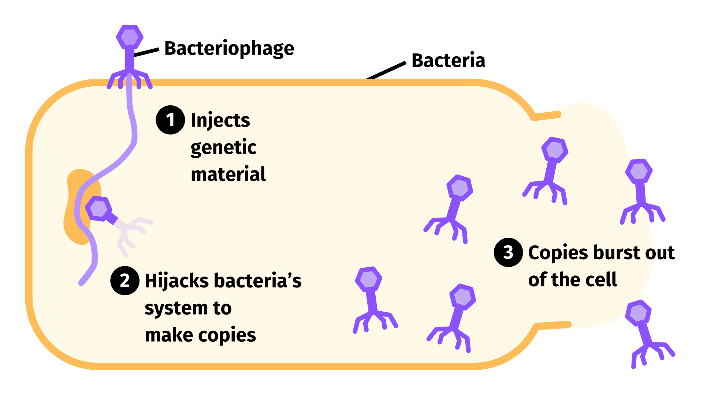
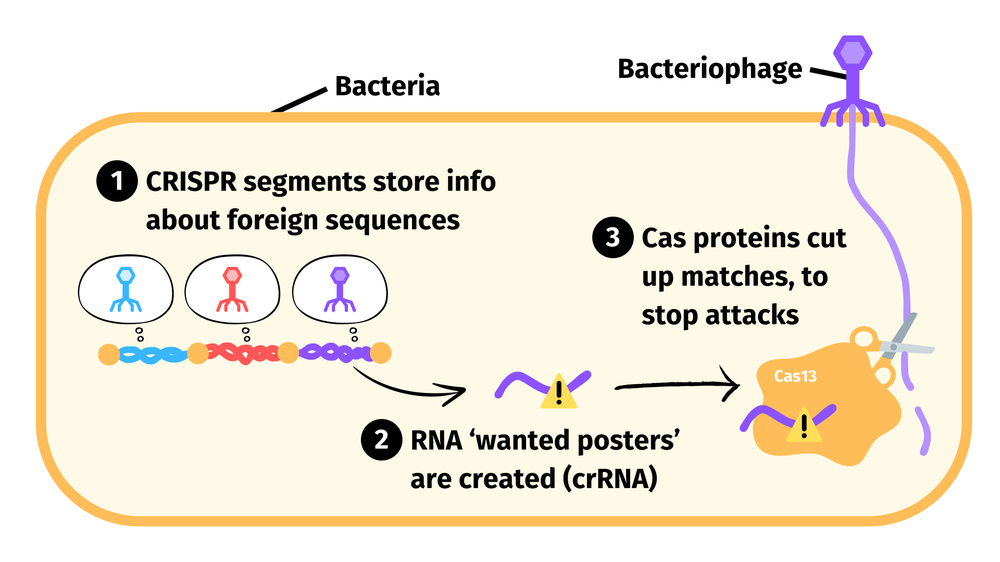
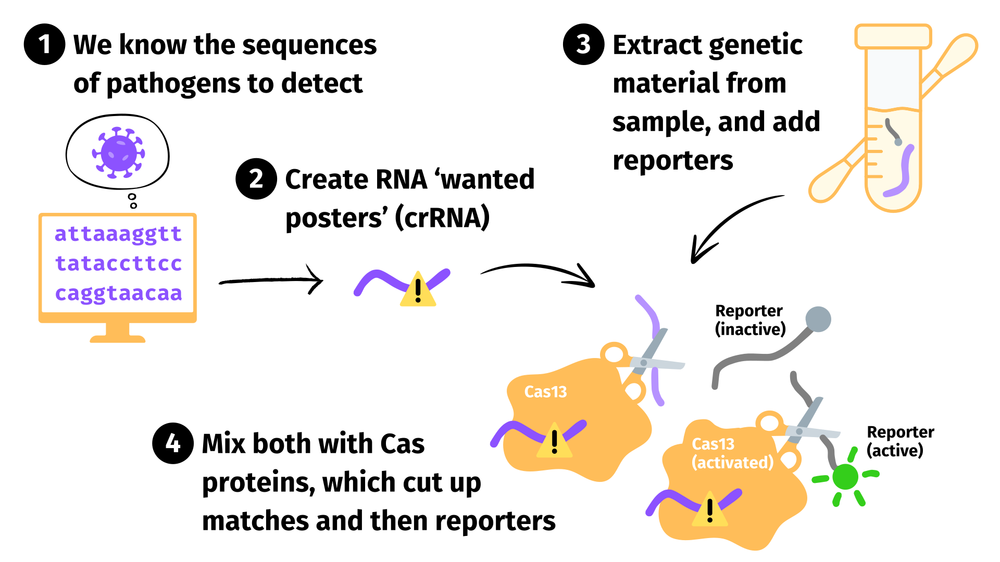

Diagnosing infectious diseases with CRISPR: SHERLOCK and DETECTR explained
You might have heard of CRISPR as a tool for editing genes - but it can actually do much more. SHERLOCK and DETECTR are two diagnostic tools that leverage CRISPR to be able to detect specific diseases. The hope is that these (and similar) methods could enable cheaper, faster and more accurate medical diagnostics.
This article is my attempt to explain CRISPR, and how these diagnostic methods work - hopefully in a way that’s free of unexplained biology jargon!
What’s CRISPR?
Before we dive into SHERLOCK and DETECTR, we need to understand CRISPR. And for that, we should understand where it comes from.
Bacteriophages are viruses that attack bacteria. They come along, inject some genetic material, and hijack the bacteria’s mechanisms to produce more viruses. This destroys the bacteria in the process.

Obviously, this is not great for bacteria! To defend themselves, bacteria have evolved an immune system that is able to detect, remember and destroy foreign genetic material.1This is analogous to the human immune response which can detect (with dendritic cells), remember (with memory cells) and destroy (with killer cells) pathogens.
CRISPR serves the ‘remember’ role in this immune system. It’s a backronym2From Wikipedia, ‘A backronym is an acronym formed from an already existing word by expanding its letters into the words of a phrase’. Biologists seem to really like these.
of ‘Clustered Regularly Interspaced Short Palindromic Repeats’, and refers to segments of DNA found in bacteria. These DNA segments store information about what foreign genetic material has been seen before, so it can be easily identified in future.CRISPR-associated proteins, or Cas proteins, do work to support other parts of the immune system. This includes:
- Detecting certain genetic material, for example to see whether it matches known foreign material.
- Destroying genetic material, for example by cutting it into pieces.
- Editing the CRISPR data store, for example by adding new sections of genetic material it wants to remember as foreign after surviving a new viral attack.
There are quite a few Cas proteins. To help keep things organised, we group them into types - the most interesting are Cas9, Cas12 and Cas13. Within a single type there are usually multiple subtypes, like Cas13a, Cas13b, etc. And then for a subtype, there may be variants from different strains of bacteria, such as PsmCas13b and CcaCas13b.
A lot of attention has been paid to the Cas proteins that can edit the CRISPR datastore. This is because these can be used to make precise edits in DNA, which could allow us to do much more in synthetic biology.
We’ll be using the other parts of the bacterial immune system for diagnostics tools: mostly the proteins focused on detecting and destroying genetic material.
In bacteria, the detection and destroying system works by:
- CRISPR DNA segments store information about genetic sequences we want to detect.
- We transcribe the information about the target sequence into RNA,3
This is often known as CRISPR RNA, or crRNA.
which acts like a ‘wanted poster’ that identifies the target. - The Cas protein holds on to this ‘wanted poster’. When it finds matching genetic material, it cuts it up. This prevents it from causing the bacteria harm. Because the wanted poster might match just part of the sequence, some Cas proteins go further than this: once activated, they’ll just start chopping any genetic material they see to make sure any invader is fully destroyed (known as collateral activity).

How can we use this system for diagnostics?
The process for diagnostics is very similar to what bacteria do:
- We have stores of genetic sequences we want to detect. We might focus on the sequences of common or very harmful pathogens that are hard to detect via other existing tests.
- We transcribe the information about the target sequence into RNA, which acts like a ‘wanted poster’ that identifies the target.
- We collect a test sample, where we might find the pathogen’s genetic material. To prepare this, we usually:
- Collect this with a nasal swab or similar.
- Use an extraction buffer solution to release genetic material from the pathogens. For example, detergents can break down the lipid coatings that contain virus DNA.
- Amplify the genetic material, so it’s easier to detect. This is often via recombinase polymerase amplification (RPA),4
We could just use RPA, with exonuclease III and a fluorescent probe. If the target was present, it would be amplified and result in the probe being cleaved. The change in fluorescence could then be measured.
However, getting RPA to be highly specific to the target requires a lot of careful primer and probe design. It also has limits, and tends to be slightly less specific than we can get with CRISPR methods.
Therefore using CRISPR allows us to worry less about our RPA step being specific, because the CRISPR step gives us the specificity we need. This could also enable building lower cost diagnostic devices in future as we don’t need to hold the reaction temperature as precisely (which also results in lower RPA specificity).
We could also have both steps be specific, and provided these are reasonably uncorrelated it could help us build highly specific tests.
which repeatedly duplicates the RNA or DNA present - similar to PCR. - Add reporter genetic material. This is DNA or RNA that changes when it is cut. This change can then be observed: usually we use colour-changing or fluorescence-changing5
Fluorescence is light given off when the molecule is excited. Usually this is when we shine other light on it. For example, green fluorescent protein glows green when we shine blue light on it. We can measure fluorescence with a fluorometer.
Reporter molecules that change fluorescence usually work by having something fluorescent (a fluorophore) on one end, and something that absorbs the fluorescence on the other (a quencher). When cut, the two separate and the fluorescent end is able to fluoresce more.
reporters.
- We mix everything together. The Cas protein holds on to the ‘wanted poster’. If it finds matching genetic material, it cuts it up. Once activated, they start chopping any genetic material they see. This includes the reporter genetic material we added in step 4d, so we see a measurable colour or fluorescence change.

SHERLOCK
This uses the Cas13a protein, and basically works as above with a fluorescent reporter. The raw materials cost $0.61 / test.
The original paper showed success identifying Dengue and Zika virus infections, and some cancer cell mutations. This technology was used for some COVID tests, and the test takes about 1 hour.
SHERLOCKv2
This is similar to SHERLOCK, with some tweaks that make it more specific, cheaper, robust, and faster.
To make it more specific and cheaper, it uses four Cas proteins rather than just one: LwaCas13a, PsmCas13b, CcaCas13b, and AsCas12a. These cut different types of reporters in different ratios, allowing for detecting which protein has been activated. Each protein is given a different RNA ‘wanted poster’, which allows for detecting four different sequences. These can either be different parts of the same target sequence (increasing specificity), or sequences from different pathogens (decreasing cost, as multiple targets can be screened for in a single test).
To make it faster and more robust, they discovered a way to amplify the detection signal. This is by using some variants of Csm6: specifically EiCsm6 and LsCsm6. (CsmX is similar to the naming for CasX proteins, but represents a multi-protein structure rather than an individual protein). These variants are activated by the cut up ends of certain reporters, and then start cutting more reporters themselves. This means if the Cas13 or Cas12 proteins cut just a few reporters, the Csm6 will be activated and boost the signal further.
To further make it faster and easier to use, they designed and tested different reporters. They made a fluorescent reporter that meant the process could be done in 23 minutes. They also developed a reporter that could be used in lateral flow tests, to be seen visibly within 2 hours without special equipment.
DETECTR
This works very similarly to SHERLOCK, but uses the Cas12a protein with a fluorescent reporter.
The original paper showed success identifying specific types of human papillomavirus (HPV), a virus related to the development of some human cancers. They showed it could detect this within 1 hour.
During the COVID-19 pandemic, a DETECTR COVID test was designed that showed similar accuracy to PCR tests and could be done in 30 minutes.6I don’t think this was actually used at scale, although I can’t find a citation either way on this.
Conclusion
These new detection methods could help us develop cheaper, faster and more accurate diagnostics tools. Excitingly, they serve as a platform upon which many different diseases or conditions could be diagnosed, and there may be further room for improvement as we better understand what different Cas proteins do.
I learnt about these methods as I was going through the Biosecurity Fundamentals course, which is run by my colleague Will Saunter at BlueDot Impact. I highly recommend this course if you’re interested in ways to better prepare for, prevent, detect, respond and recover from future pandemics.
Footnotes
-
This is analogous to the human immune response which can detect (with dendritic cells), remember (with memory cells) and destroy (with killer cells) pathogens. ↩
-
From Wikipedia, ‘A backronym is an acronym formed from an already existing word by expanding its letters into the words of a phrase’. Biologists seem to really like these. ↩
-
This is often known as CRISPR RNA, or crRNA. ↩
-
We could just use RPA, with exonuclease III and a fluorescent probe. If the target was present, it would be amplified and result in the probe being cleaved. The change in fluorescence could then be measured.
However, getting RPA to be highly specific to the target requires a lot of careful primer and probe design. It also has limits, and tends to be slightly less specific than we can get with CRISPR methods.
Therefore using CRISPR allows us to worry less about our RPA step being specific, because the CRISPR step gives us the specificity we need. This could also enable building lower cost diagnostic devices in future as we don’t need to hold the reaction temperature as precisely (which also results in lower RPA specificity).
We could also have both steps be specific, and provided these are reasonably uncorrelated it could help us build highly specific tests. ↩
-
Fluorescence is light given off when the molecule is excited. Usually this is when we shine other light on it. For example, green fluorescent protein glows green when we shine blue light on it. We can measure fluorescence with a fluorometer.
Reporter molecules that change fluorescence usually work by having something fluorescent (a fluorophore) on one end, and something that absorbs the fluorescence on the other (a quencher). When cut, the two separate and the fluorescent end is able to fluoresce more. ↩
-
I don’t think this was actually used at scale, although I can’t find a citation either way on this. ↩